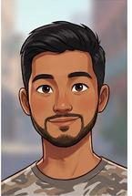
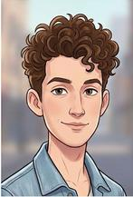
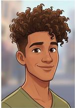

Nuestro Equipo: La Triple D
Conoce a los integrantes detrás de este proyecto de información

Danilo M. Velazquez
Descripción: Estudiante con una visión estratégica y un marcado interés en el liderazgo de equipos. Se caracteriza por su capacidad para analizar los procesos comunicativos desde una perspectiva práctica, buscando siempre la claridad y la asertividad en cada interacción. Es un firme creyente de que la honestidad y el respeto son la base de cualquier entorno laboral productivo.
Reflexión Final
"A lo largo de este trimestre, mi mayor aprendizaje ha sido entender que la comunicación no es un proceso automático, sino una decisión consciente. Antes solía pensar que ser claro era suficiente, pero tras analizar los estilos de comunicación, me di cuenta de cuántas veces caemos en comportamientos pasivo-agresivos por miedo a la confrontación directa."

Diego A. Agudelo
Descripción: Apasionado por los detalles y la psicología detrás del lenguaje humano. Se destaca por su capacidad de observación y su sensibilidad ante la comunicación no verbal, elementos que considera clave para conectar con los demás de manera auténtica. Siempre busca equilibrar la técnica con la empatía para garantizar que el mensaje sea recibido de forma positiva.
Reflexión Final
"Lo que más me impactó de la formación fue descubrir que el 80% de nuestra comunicación ocurre sin que digamos una sola palabra. Estudiar conceptos como la kinesia y la proxemia me hizo reflexionar sobre cómo mi postura o mi contacto visual pueden contradecir mi mensaje verbal. Esta experiencia me ha servido para ser mucho más observador conmigo mismo."

Deiby S. Jimenez
Descripción: Creativo y enfocado en la resolución de conflictos a través del diálogo constructivo. Posee una habilidad especial para identificar las barreras invisibles en la comunicación y transformarlas en puentes de entendimiento. Su enfoque se centra en la responsabilidad ética del emisor, asegurando que cada palabra contribuya al bienestar colectivo."
Reflexión Final
"Para mí, lo más significativo fue comprender la diferencia entre simplemente 'informar' y realmente 'comunicar'. Al analizar las funciones del lenguaje y el impacto del estilo pasivo-agresivo, comprendí que cada mensaje que emitimos tiene una consecuencia emocional en el receptor. Me llevo la lección de que el bullying empieza con pequeñas 'pullas' disfrazadas de humor."